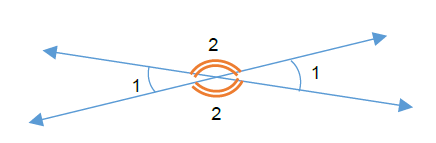
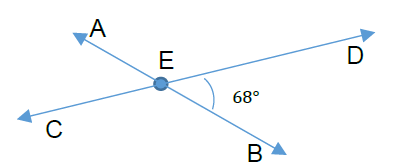
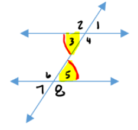
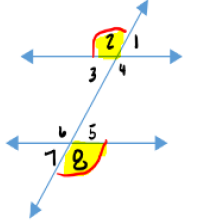
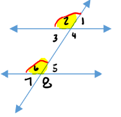
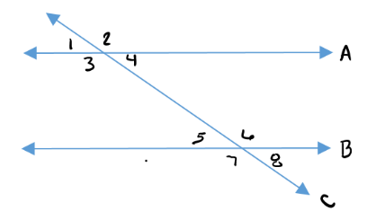

Chapter 5: Geometry
Section 5.2: Vertical Angles, Parallel and Perpendicular Lines
Learning Objective(s)
- Understand and find vertical angles.
- Understand and use properties of parallel lines.
- Understand and use properties of perpendicular lines.
- Identify alternate interior and exterior angles.
Vertical Angles
Frequently we see two lines that intersect each other at a common point. When this happens we end up with vertical angles — the angles that are opposite each other at the point of intersection. This is illustrated in Figure 5.2.1 below.

Figure 5.2.1 — Vertical angles where \(\angle 2 = \angle 2\) and \(\angle 1 = \angle 1\). Also \(\angle 1\) and \(\angle 2\) are supplementary.
Example 1
Using vertical angles, find all the missing angles in the figure below.

Solution
We are given \(\angle BED = 68°\).
By vertical angles, the opposite angle is equal: \(\angle CEA = 68°\).
Since \(\angle BED\) and \(\angle DEA\) are supplementary (they form a straight line):
\[\angle DEA = 180° - 68° = 112°\]By vertical angles: \(\angle BEC = 112°\).
Summary: \(\angle BED = \angle CEA = 68°\) and \(\angle DEA = \angle BEC = 112°\).
Parallel Lines & Perpendicular Lines
Two lines are parallel to each other if they have the same slope, meaning they will never intersect — like railroad tracks. Since parallel lines never meet, they have no points in common. When two lines do share a point they are called intersecting lines, like the lines that create vertical angles.
Sometimes two intersecting lines meet at exactly a 90° angle. When this happens the lines are called perpendicular. Perpendicular lines have slopes that are negative reciprocals of each other. For example, if line A has slope \(m = \dfrac{1}{2}\) and lines A and B are perpendicular, then the slope of B is \(m = -\dfrac{2}{1} = -2\).
If a pair of parallel lines are "cut" by another line, that cutting line is called a transversal. When this happens, eight angles are formed that follow several important rules, as shown in Table 5.2.1 below.
| Name | Description | Sketch | Angle Pairs | Property |
|---|---|---|---|---|
| Alternate Interior Angles | Angles that are between the two parallel lines, that don't share a vertex, and are on opposite sides of the transversal. |
 |
|
Alternate interior angles have the same measure.
|
| Alternate Exterior Angles | Two angles that are outside the two parallel lines, that don't share a common vertex, and are on opposite sides of the transversal. |
 |
|
Alternate exterior angles have the same measure.
|
| Corresponding Angles | One interior and one exterior angle on the same side of the transversal, on opposite parallel lines. |
 |
|
Corresponding angles have the same measure.
|
Example 2
If \(\angle 4 = 35°\), find the measure of \(\angle 5\), where lines A and B are parallel, cut by transversal C.

Solution
With lines A and B parallel and C being a transversal, \(\angle 4\) and \(\angle 5\) are alternate interior angles.
\[\angle 5 = \angle 4 = 35°\]\(\angle 5 = 35°\)
Example 3
If \(\angle 7 = 135°\), find the measure of \(\angle 2\), where lines A and B are parallel, cut by transversal C.

Solution
With lines A and B parallel and C being a transversal, \(\angle 7\) and \(\angle 2\) are alternate exterior angles.
\[\angle 2 = \angle 7 = 135°\]\(\angle 2 = 135°\)
Example 4
If \(\angle 3 = 125°\), find the measure of \(\angle 7\), where lines A and B are parallel, cut by transversal C.

Solution
With lines A and B parallel and C being a transversal, \(\angle 3\) and \(\angle 7\) are corresponding angles.
\[\angle 7 = \angle 3 = 125°\]\(\angle 7 = 125°\)
Example 5
If \(\angle 4 = 35°\), find the measure of \(\angle 2\), where lines A and B are parallel, cut by transversal C.

Solution
\(\angle 2\) and \(\angle 4\) fall on a single straight line, which means they are supplementary angles.
\[\angle 2 = 180° - 35° = 145°\]\(\angle 2 = 145°\)
Summary
When two lines intersect, the angles opposite each other are called vertical angles and are always equal. Parallel lines never intersect and have the same slope; perpendicular lines intersect at 90° and have slopes that are negative reciprocals. When a transversal cuts two parallel lines, eight angles are formed. Alternate interior angles are equal, alternate exterior angles are equal, and corresponding angles are equal. Adjacent angles along a straight line are supplementary.